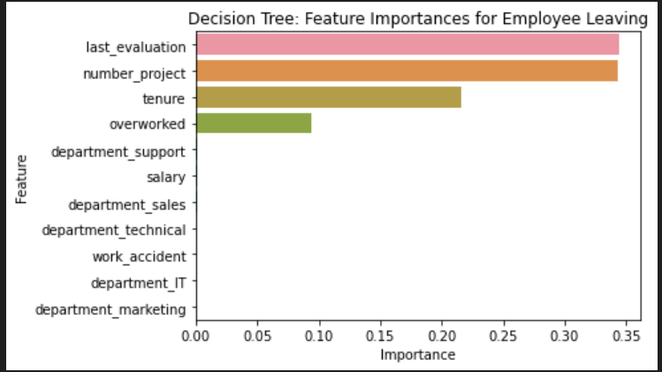
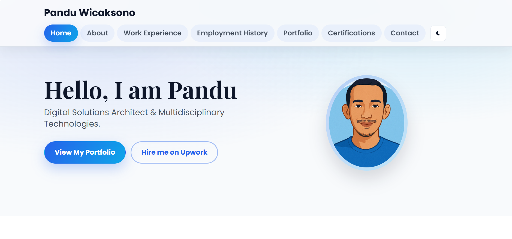

Available for freelance and collaboration
I design and build scalable digital products.
Digital Solutions Architect with multidisciplinary strengths in software development, analytics, cybersecurity, and UX. I turn complex workflows into clean and profitable systems.
Full Stack Engineering
Data Intelligence
Security Mindset
UX-Driven Delivery
About Me
I am a certified multidisciplinary professional who transforms data, design, and technology into practical solutions. My strengths span software development, data analytics, cybersecurity, UX/UI, digital marketing, and AI-assisted workflows. I focus on building secure, user-centered, and scalable products with a clear delivery process from planning to deployment.
React
NestJS
Node.js
PostgreSQL
MongoDB
Python
Tableau
Google BigQuery
Figma
GitHub
Data Analytics & Business Intelligence
Proficient in SQL, ETL, Tableau, Google BigQuery, data visualization, statistical analysis, predictive modeling, Python, and R.
Cybersecurity
Skilled in threat detection, SIEM tools, network security, vulnerability assessment, NIST frameworks, risk management, and Linux administration.
UX, AI, & Digital Innovation
Capable in wireframing, Figma, Adobe XD/InDesign/Illustrator, usability testing, user research, prompt engineering, AI tools (Microsoft Copilot, Google Gemini), digital marketing strategies (SEO, SEM, social media, email campaigns), and structured thinking.
Software Development & Engineering Delivery
Frontend: HTML, CSS, JavaScript, React. Backend: Node.js, Express.js, PostgreSQL, MongoDB. APIs: RESTful APIs and JSON integration. Tools: Git, GitHub, VS Code, Postman. Deployment: Render and Vercel. Additional strengths include debugging, responsive optimization, and AI-assisted development using Microsoft Copilot, Google Gemini, and Amazon Q Developer.
What I Can Build For You
From idea to deployment, I help teams build digital products that are secure, measurable, and ready for scale.
End-to-End Product Development
Build complete web applications with clean architecture, resilient APIs, and production-focused frontend performance.
Analytics & Automation
Transform operational data into dashboards and workflows that reduce manual tasks and improve business decisions.
Secure Digital Operations
Apply practical security controls, role-based access, and auditability so systems stay reliable under real usage.
Work Experience
E-Business Intern
- Conducted market research to identify potential business opportunities and target markets.
- Collaborated with team members to develop business plans with financial projections and marketing strategies.
- Analyzed data to support business decisions and provide actionable insights.
- Prepared presentations and reports to communicate business plans to stakeholders.
- Assisted in implementation and monitoring to ensure successful execution.
Event Logistics Intern
- Assisted in planning and organizing logistical aspects for events, including accommodation, transportation, and equipment.
- Supported collaboration with departments and vendors to ensure smooth execution.
- Helped manage budgets and ensured expenses stayed within plan.
- Coordinated volunteer teams and ensured tasks were completed efficiently.
- Contributed to post-event evaluation reports to improve future events.
Business Plan Intern
- Conducted market research to identify potential business opportunities and target markets.
- Collaborated with team members to develop comprehensive business plans with projections and go-to-market strategies.
- Analyzed data to support business decisions and provide insights.
- Prepared presentations and reports for stakeholders.
- Assisted in implementation and monitoring of business plans for successful execution.
Employment History
NestJS, React | Specialized in Automated E-commerce Ecosystems
Built production-ready F&B platforms with NestJS, PostgreSQL, React, and Vite, focused on automation and reliability. Delivered real-time order tracking via SSE, Google Sheets financial ledger automation, multi-provider email orchestration, secure authentication (JWT and reCAPTCHA), and admin dashboards for finance controls and audit logs. Integrated payment workflows including Omise and PromptPay webhooks, plus operational printing support.
Software Developer
Designed and developed a full-stack restaurant e-commerce platform with secure checkout, multi-gateway payment support, and automated tax calculation. Built an operations dashboard for orders, payments, refunds, and performance metrics, integrated live chat, and improved backend workflows for tracking, delivery updates, and audit logging. Delivered a scalable bilingual experience with responsive UI and analytics for sales and customer behavior.
Key Achievement: Launched a complex restaurant e-commerce system that boosted online sales, reduced workload, and improved customer satisfaction.
Portfolio
Selected projects with real business impact across data analytics and full stack development.

Salifort-Motors-project-lab
The models and the feature importances extracted from the models confirm that employees at the company are overworked.

Portofolio Website
A personal portfolio site showcasing projects, certifications, and contact details with responsive design and dark mode.

No project found for this filter yet.
Certification


Contact Me
Have a project idea, system challenge, or collaboration opportunity? Let us talk.
Let us build something impactful.
I am open to freelance projects and collaborations in product engineering, data-driven systems, and secure digital transformation.
Indonesia
Open for remote work
Fast response for project inquiries